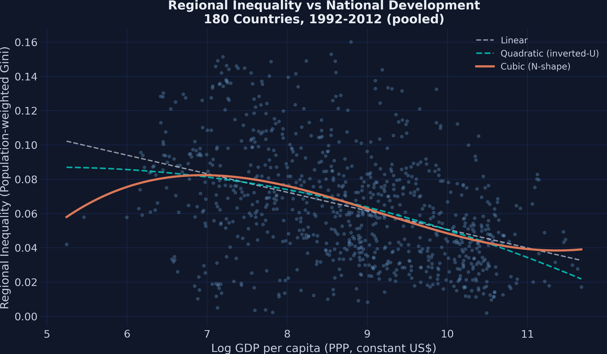
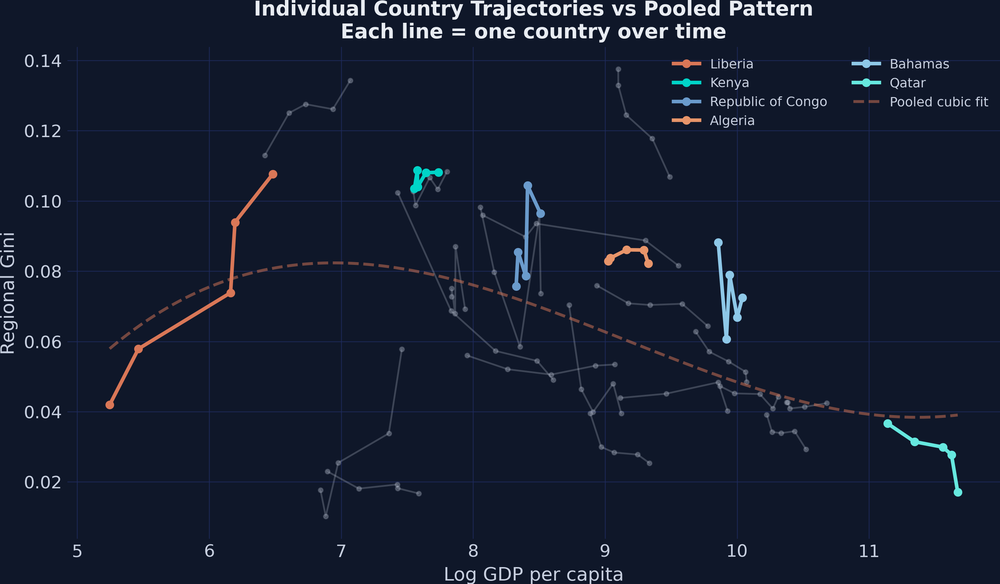
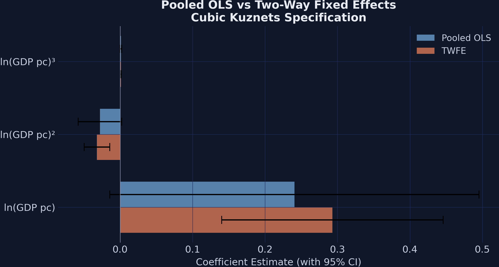
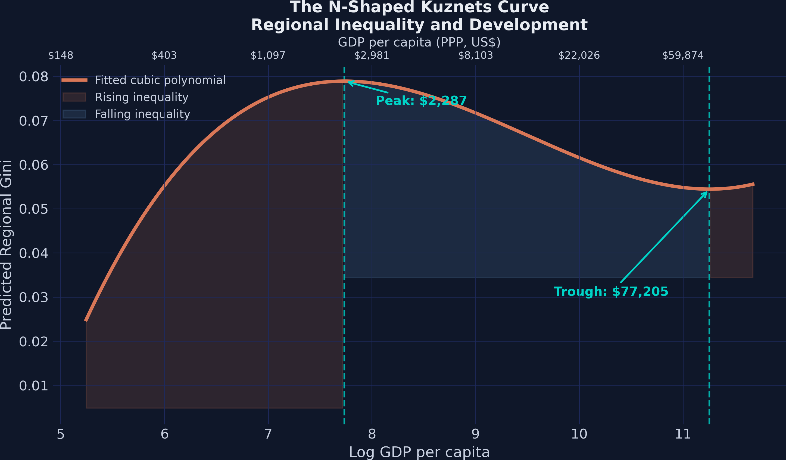
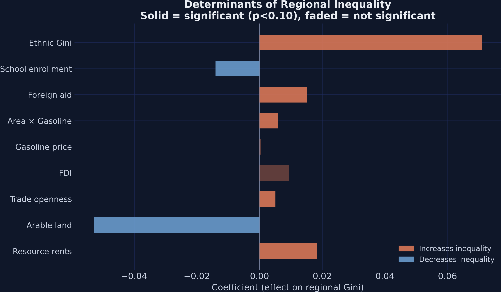
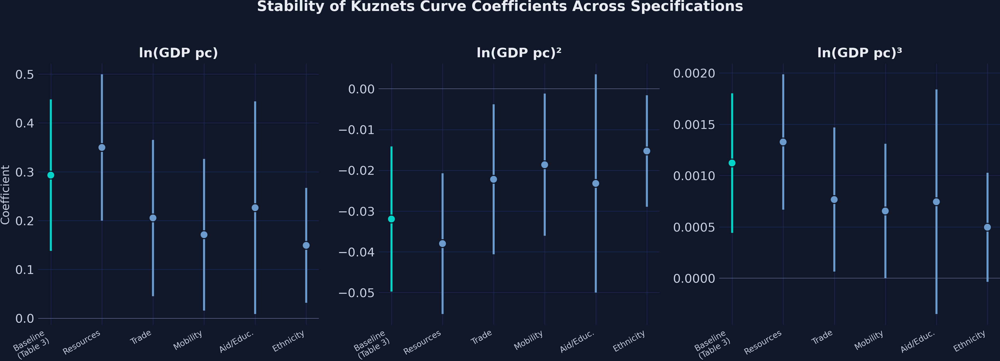

Panel fixed effects in Python finds an N-shape, not an inverted-U
Nagoya University (GSID)
June 11, 2026
Act I
In 1955 Simon Kuznets argued that inequality rises as countries industrialize, then falls as growth diffuses — an inverted-U in income.
With satellite-lights data on 180 countries, does the inverted-U still hold — or is there a third act?

Regional Gini vs log GDP per capita, 880 country-period points. Linear (gray) misses the curvature; the quadratic inverted-U (teal) misses the high-income upturn; the cubic N-shape (orange) tracks the cloud.
Act II
Periods are 5-year averages from 1990–1994 through 2010–2013; mean Gini \(= 0.064\), SD \(= 0.033\).
\[\text{Gini}_i = \beta_0 + \beta_1 \ln Y_i + \beta_2 (\ln Y_i)^2 + \beta_3 (\ln Y_i)^3 + \varepsilon_i\]
\(\beta_2\) lets the curve bend once (an inverted-U if negative); \(\beta_3\) lets it bend a second time (an N if positive). A linear term alone forces monotonicity.
| Specification | \(\beta_1\) | \(\beta_2\) | \(\beta_3\) | \(R^2\) |
|---|---|---|---|---|
| Linear | \(-0.011\) | — | — | \(0.164\) |
| Quadratic | \(0.015\) | \(-0.002\) | — | \(0.170\) |
| Cubic | \(0.241\) | \(-0.028\) | \(0.001\) | \(0.176\) |
Cubic terms are only marginally significant (\(p \approx 0.07\)–\(0.09\)), and \(R^2\) barely moves across the ladder.

Twenty country trajectories over time (faint) with six highlighted: Liberia, Kenya, Rep. Congo, Algeria, Bahamas, Qatar. Within-country paths look nothing like the pooled cubic.
\[\text{Gini}_{it} = \beta_1 \ln Y_{it} + \beta_2 (\ln Y_{it})^2 + \beta_3 (\ln Y_{it})^3 + \alpha_i + \gamma_t + \varepsilon_{it}\]
What’s left is the within estimator: how each country’s inequality moves as it develops, net of fixed traits and global shocks.
0.293 · −0.032 · 0.001
\(\hat\beta_1,\ \hat\beta_2,\ \hat\beta_3\) — cubic two-way FE, every term \(p < 0.001\); within-\(R^2 = 0.142\)
| Two-way FE model | \(\hat\beta_1\) | \(p\) | within-\(R^2\) |
|---|---|---|---|
| Linear | \(-0.003\) | \(0.265\) | \(0.009\) |
| Cubic | \(0.293\) | \(<0.001\) | \(0.142\) |
A researcher who fit only the linear FE model would conclude development has no effect — a false negative born of forcing a straight line through an N.

Cubic polynomial coefficients, pooled OLS vs two-way FE, with 95% CIs. FE estimates are larger in magnitude and visibly more precise.
Act III

Fitted N-shaped curve from the cubic two-way FE model. Orange regions rise, the blue middle falls; turning points annotated on a dual log/USD axis.
Fixed effects strip time-invariant confounders, but the relationship is descriptive: read it as conditional association, not a policy lever.
0.071
ethnic-Gini coefficient (\(p < 0.001\)) · 3.9× the next-largest positive effect · vs a mean regional Gini of 0.064

Determinant coefficients ranked by magnitude. Orange = raises inequality, blue = lowers it; faded bars are insignificant (\(p \geq 0.10\)). Ethnic Gini dwarfs the rest.

Linear, quadratic, and cubic coefficients across all six specifications with 95% CIs. The (+, −, +) sign pattern holds throughout; magnitudes attenuate under ethnicity.
Objection. You absorbed 180 country effects and 5 period effects — surely that identifies the development effect on inequality?
Response. No. Two-way FE removes only time-invariant country confounders and global shocks. Time-varying confounders — and reverse causality from inequality to growth — remain. The estimand is a within-country association, conditional on the polynomial and the FE; not an ATE.